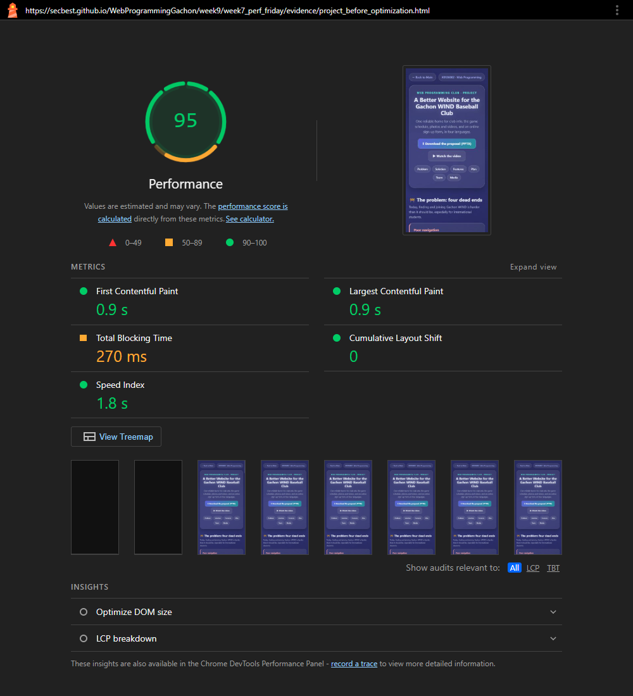
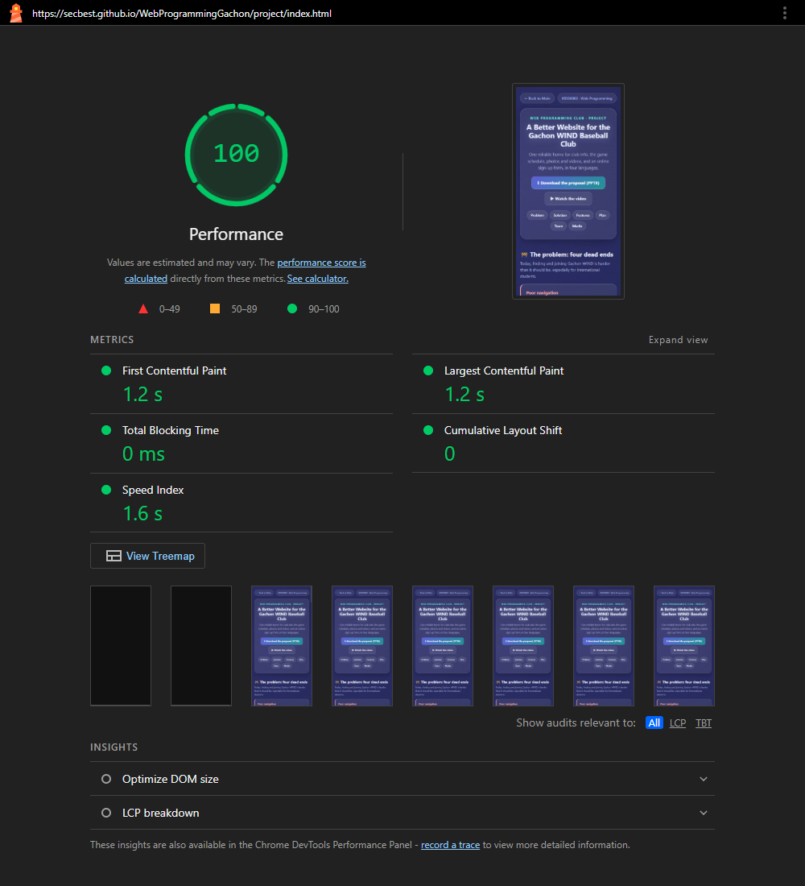
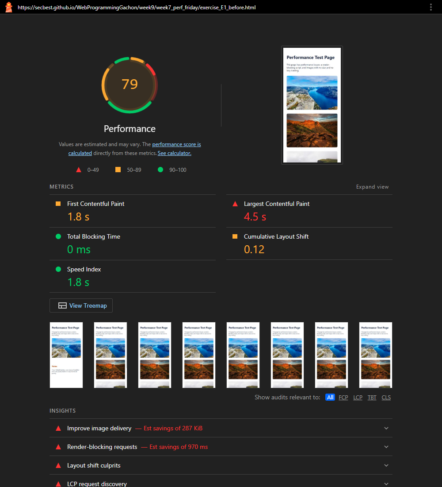
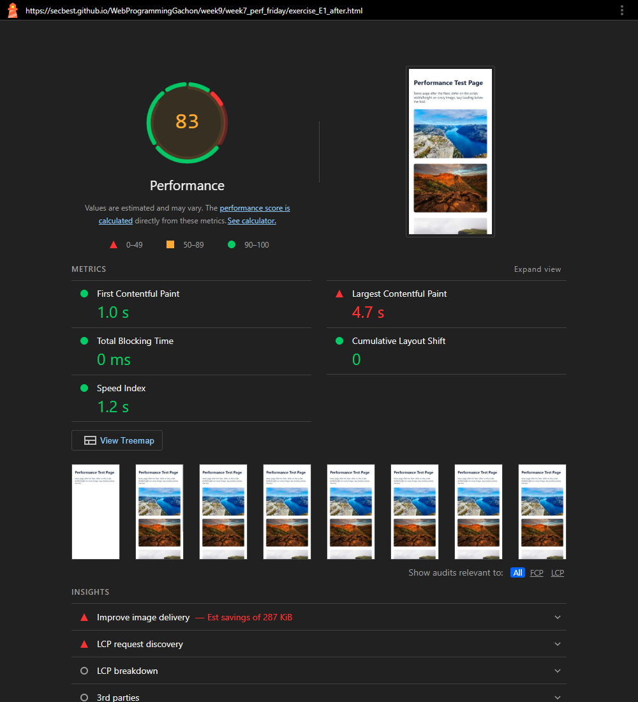

Web Performance Optimization · Report
Step 1 · Audit the team project page (before)
Page: secbest.github.io/WebProgrammingGachon/project/ (Team 16, Gachon WIND baseball club). A public copy of the page as it was before my changes is kept at evidence/project_before_optimization.html so the "before" audit also has a real URL.

The page is a single 17 KB HTML file with inline CSS, no external scripts and no images (icons are inline SVG), so it was already close to the top of the scale. The only real cost was Total Blocking Time: 270 ms in the median run and up to about 1.1 s in slow runs, caused by rendering work on the main thread.
Step 2 · Biggest issues found
| # | Issue | Evidence |
|---|---|---|
| 1 | background: ... fixed on <body>. A fixed background has to be repainted when the page scrolls or changes. | Style & Layout and "Other" main-thread time of about 1.7 s each in slow runs. |
| 2 | backdrop-filter: blur(12px) on the hero card. The browser must blur whatever is behind the card. | Same main-thread cost; the card is translucent over the gradient, so the blur is barely visible. |
Step 3 · Changes made to the project page
- Removed
fixedfrom the body background gradient.- linear-gradient(160deg, #0f1226, #181c3a 60%, #121631) fixed; + linear-gradient(160deg, #0f1226, #181c3a 60%, #121631);
- Removed the
backdrop-filterblur from the hero card.- backdrop-filter: blur(12px); -webkit-backdrop-filter: blur(12px);
The page looks almost identical: the gradient now scrolls with the page, and the hero card is a flat translucent panel.
Step 4 · Audit after

| Project page | Score (median) | FCP | LCP | CLS | TBT | Speed Index |
|---|---|---|---|---|---|---|
| Before | 95 | 0.9 s | 0.9 s | 0 | 270 ms | 1.8 s |
| After | 100 | 1.2 s | 1.2 s | 0 | 0 ms | 1.6 s |
The practice page: five optimizations (E1)
The project page has no images or scripts to optimize, so I measured the lesson's five optimizations on the E1 practice page: before and after.


| E1 page | Score (median) | FCP | LCP | CLS | Speed Index |
|---|---|---|---|---|---|
| Before | 79 (runs: 82, 67, 79) | 1.8 s | 4.5 s | 0.12 (up to 0.29) | 1.8 s |
| After | 83 (runs: 84, 82, 83) | 1.0 s | 4.7 s | 0 | 1.2 s |
The five changes
- defer on the jQuery script so it no longer blocks HTML parsing.
<script src=".../jquery.min.js" defer></script>
- width and height on every image so the browser reserves space.
<img src="..." alt="..." width="1200" height="800">
- loading="lazy" on the below-the-fold images (images 2 and 3 only).
<img src="..." alt="..." width="1200" height="800" loading="lazy">
- fetchpriority="high" on the hero image, which is deliberately not lazy-loaded.
<img src="..." alt="..." width="1200" height="800" fetchpriority="high">
- WebP with a JPEG fallback via
<picture>(E2). The practice page already requests.webpimages.<picture><source type="image/webp" srcset="hero.webp"><img src="hero.jpg" alt="..."></picture>
Reflection
Biggest impact: image width/height. It is the one change that showed up in every run: Cumulative Layout Shift went from 0.12 (and 0.29 in the worst run) to exactly 0, because the browser reserves the space before each photo arrives. defer was second: First Contentful Paint dropped from about 1.8 s to 1.0 s in the median runs, although FCP also varied between 0.9 s and 2.0 s from run to run on the same page.
What did not improve: LCP stayed near 4.6 s. The hero photo is the largest element and is still a 150 KB download from an external server, so lazy loading and WebP cannot help it; only a smaller or closer image would. In my E2 test, WebP was 15% smaller for one photo and no smaller for another, so it is not a guaranteed saving. The score gain on this page was small (79 to 83) because the page is tiny and the external image dominates.
On the project page, the lesson I take away is that effects like a fixed background and a blur filter cost main-thread time even on a page with almost no content, and that a single Lighthouse run is not enough evidence: I needed several runs per page to say anything honest.